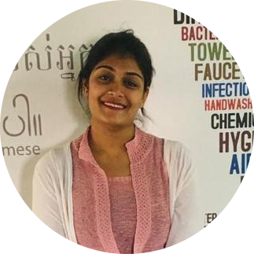

|  |
Sanjana NS
From Bengaluru. |
Objective
To secure and succeed responsible career oppurtunity to utilize my skills and knowledge. Embrace challenges together with companies vision and mision.
Education
| Degree |
Institution |
Score |
Year of passing |
| BE in computer science |
East West Institute of technology |
7.2CGPA |
2022 |
| II PUC |
St.Ann's PU College |
62% |
2017 |
| 10th std |
Venkat International Public School |
7.8CGPA |
2015 |
Projects
- 1.AI based smart voice assistant for rural and village people
- -A smart box device is set up in villages that can be used for medicine identification,leaf disease detection, emergency dial button, mq2 sensor, speech to text functionality.
- 2.Zoo Management System
- -Windows 10, HTML, AJAX, JQUERY, Javascript, PHP, SQL.
- 3.Mini-project for HTML-based CV creation
Skills
- HTML, CSS, Javascript, SQL, MS-Excel, ITIL processes, cloud computing concepts, Virtualization knowledge, IT infrastructure-Servers, Network, Storage(Basic knowledge)
Hobbies
- Cooking
- Music
- Basketball
- Photography
Languages
- Kannada
- Hindi
- English
Achievements
- Participated in the Akhil Bhartiya Gandharva Mahavidyalaya Mandal. Passed the exam and received a distinction.
- Participated in the silver jubliee celebration of the Rajatha Sadhana Dance Center carried out in Sadhana Kishore Vrinda.